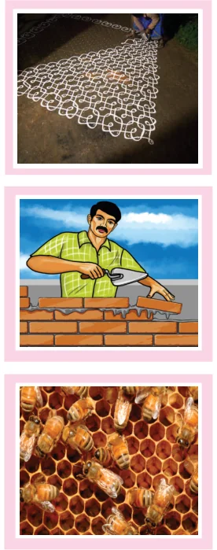
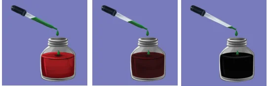
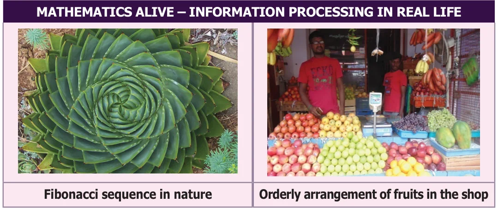

CHAPTER
INFORMATION 5 PROCESSING
Learning Objectives
- To perceive iterative processes and patterns.
- To see Euclid's game as an iterative process.
- To learn to devise and follow algorithms.
- To learn the advantage of ordering information.
Everyday morning, waking up, brushing teeth, doing physical exercise, drinking milk, having bath, having breakfast and then getting ready to school are some of the activities we do. Everyday such activities happen. Don't they? Do we see a pattern getting repeated? In our life, there are many such repeating patterns. In fact , "EAT" ; " STUDY" ; " PLAY" ; " SLEEP" is a pattern repeated daily, isn't it? When we go on doing same activities again and again, it gives rise to a new form. Let us see some more examples for repeated processes.

- We can see that some patterns are getting repeated in kolams, so as to get larger kolams.
- In the construction of a wall, a mason places the bricks one upon another and adds plaster to them in an organized manner repeatedly. After some days we can see that a nice wall is getting constructed.
- Bees make hives which are formed by the increasing pattern of hexagons where they can store optimum amount of honey and feed themselves during winter.
- Take a bottle of red paint, add a little bit of green paint to it. The change in colour
cannot be seen immediately. Add a little more, now, you can see a slight change in the colour. A little more ….., Hey! don't you see a different colour now? You add green paint drop by drop to red paint, you finally get a new colour. The activities explained above follow iterative processes.

Hence, an iterative process is a procedure that is repeated many times which gives rise to a new form.
